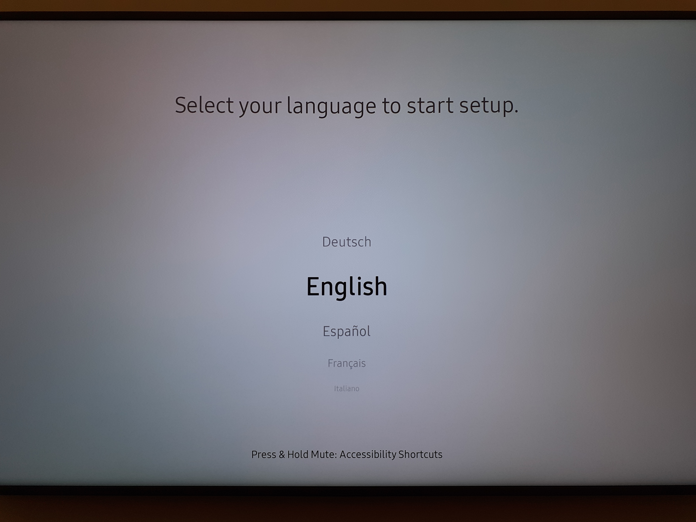
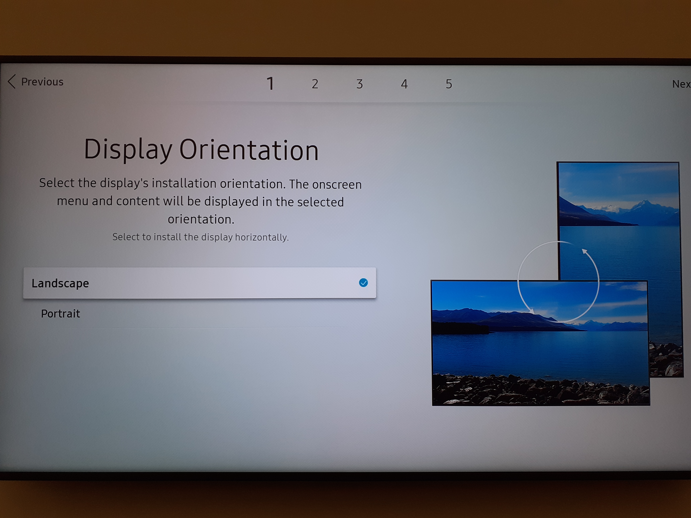
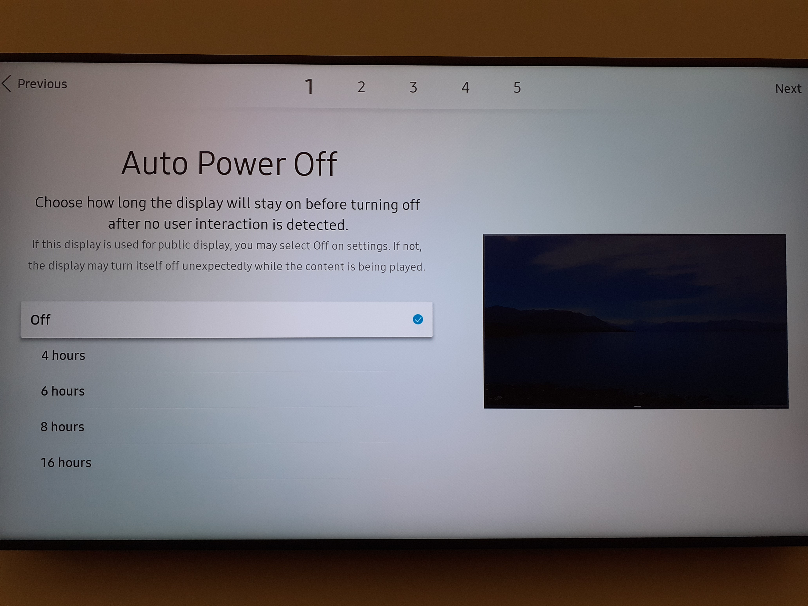
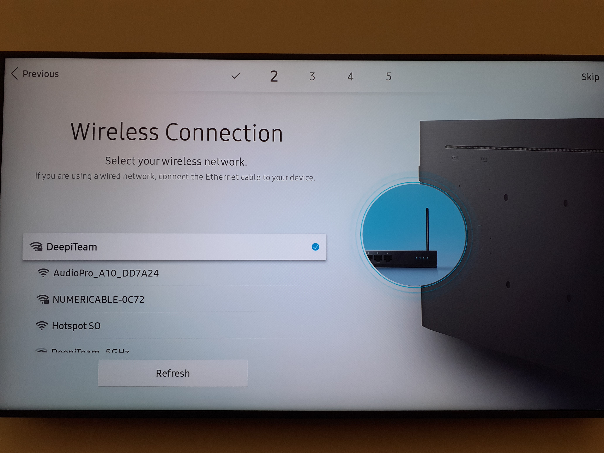

webos2_step1
Configurer la langue, l'heure et la date de l'écran

webos2_step2

webos2_step3
webos2_step4
Quod Acilio Glabrioni delatum est primo,cum consiliis armisque regem superasset Antiochum

Ex his quidam aeternitati se commendari posse per statuas aestimantes eas ardenter adfectant
Rendez-vous dans le menu SETTINGS -> Paramètre Avancés -> Réseau
Quod Acilio Glabrioni delatum est primo,cum consiliis armisque regem superasset Antiochum
Pour accéder au menu d'installation caché, appuyer et maintenir la touche SETTINGS jusqu'à l'apparition d'une bulle dans le coin supérieur droit.